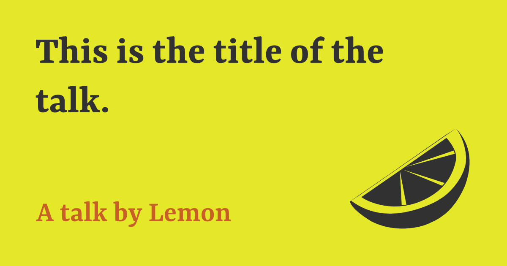
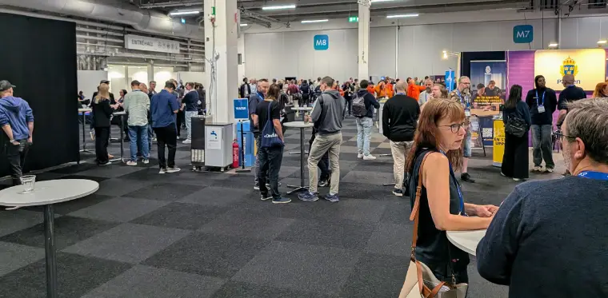
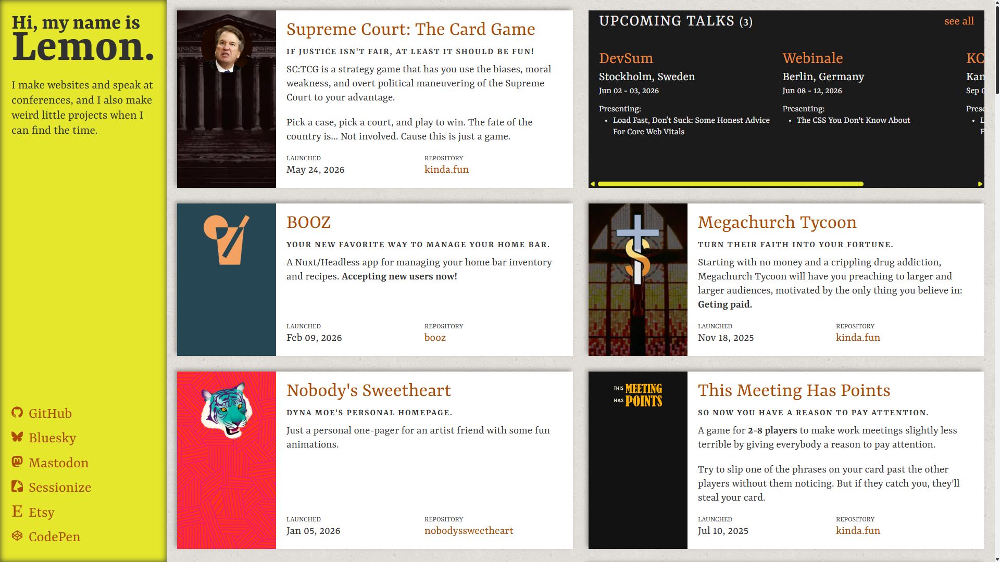

[LEMON TALK TEMPLATE]
a talk by @AhoyLemon
[LEMON TALK TEMPLATE]
a talk by @AhoyLemon
[LEMON TALK TEMPLATE]
a talk by @AhoyLemon
[LEMON TALK TEMPLATE]
a talk by @AhoyLemon
[LEMON TALK TEMPLATE]
a talk by @AhoyLemon
[LEMON TALK TEMPLATE]
a talk by @AhoyLemon
[LEMON TALK TEMPLATE]
a talk by @AhoyLemon
[LEMON TALK TEMPLATE]
a talk by @AhoyLemon
[LEMON TALK TEMPLATE]
a talk by @AhoyLemon
[LEMON TALK TEMPLATE]
a talk by @AhoyLemon
[LEMON TALK TEMPLATE]
a talk by @AhoyLemon
[LEMON TALK TEMPLATE]
a talk by @AhoyLemon
Hi!
My name is Lemon.
(I make websites.)
Where I work
Your new favorite AI engineering partner.
Where I work
- Training & Enablement
- Minneapolis, Minnesota
- AI-first
- Anthropic preferred partner
Where I work
Front End Tech Lead
I am a serious professional.
I am a serious professional.
Say it
Covers, statements, lists and quotes.
templates/_cover.scss, templates/_statement.scss, components/_blocks.scss
a talk by @AhoyLemon
The Title Goes Low
(and the subtitle is an aside)
One sentence, hung high and flush left.
The kicker lands after, quieter.
Or the kicker is an aside.
(said under the breath)
I like CSS.
I like the browser.
I like you.
The setup line comes first.
Then the payoff lands.
The one line that earns it.
Speed round!
(prefers-reduced-motion turns the strobe off)
Do not blink.
A heading with points that land
- One at a time.
- Each with a short rise.
- Eased on a recorded spring.
Numbered steps
- Write the thing.
- Ship the thing.
- Panic.
Any sufficiently advanced CSS is indistinguishable from JavaScript.
Someone, probably
Fragments with opinions.
It's fine. It's not fine.
Small print and keys
Press S for speaker view, F for full screen.
* Your keyboard may vary.
Code
Framed, numbered, stepped and built.
components/_code.scss, js/line-numbers.js
A labelled block, in steps
.card {
container-type: inline-size;
}
.card h2 {
font-size: clamp(1rem, 4cqi, 2rem);
}Two short blocks
.card { padding: 1rem; }:has(> img)(one line, set huge)
Two ways to centre a thing
Flexbox
Two properties on the parent, one per axis.
.parent {
display: flex;
justify-content: center;
align-items: center;
}Grid
One property does both axes.
.parent {
display: grid;
place-items: center;
}Sass had variables first
$brand: #ffe600;Sass had variables first
$brand: #ffe600;
.button {
background: $brand;
}
CSS has them now
:root { --brand: #ffe600; }
.button {
background: var(--brand);
}Define it
Terms, answers, tables and links.
templates/_reference.scss, components/_tables.scss
- CQW
- Container Query Width
- One percent of the nearest size container's width. Here, the slide.
- Q: Why no px inside a slide?
- A: Reveal scales the whole canvas, so px only fit one canvas size.
- Q: And vw?
- A: It measures the window, then gets scaled a second time.
| Face | Job | How often |
|---|---|---|
| Syne | Everyday text | Always |
| Yrsa | The big moments | About one slide in eight |
| Share Tech Mono | Code, numbers, asides | Whenever it's a joke |
| Format | Length | Slides | Demos |
|---|---|---|---|
| Lightning | 5 min | ~20 | 0 |
| Short | 20 min | ~50 | 1–2 |
| Standard | 30 min | ~80 | 3–5 |
| Long | 45 min | ~110 | 5–8 |
| Keynote | 45 min | ~120 | 1 |
| Panel | 45 min | 2 | 0 |
| Workshop, half day | 3 hours | ~60 | Many |
| Workshop, full day | 6 hours | ~120 | Too many |
Resources
- reveal.jsrevealjs.com
- Synefonts.google.com/specimen/Syne
- Yrsafonts.google.com/specimen/Yrsa
- Share Tech Monofonts.google.com/specimen/Share+Tech+Mono
Show it
Pictures, video, grids, embeds and demos.
templates/_over-media.scss, components/_blocks.scss, components/_embeds.scss
A caption, on a cream strip.
A p rides on an ink strip.
GIF: Simone at Maker FaireOr just a strip of text, wherever you put it.
Visual gag goes here
A placeholder for a picture you haven't found yet. Loud on purpose, so it can't ship by accident.
The gag goes here.

One image at a time


So it gets the room
Two thirds for the image, one for the words beside it.
Words first
One third for the words, two for the picture.
Three things, one job each
Pug
Writes the slides.
Sass
Dresses them.
reveal.js
Moves them.
Source: the template's own assets
Fit this.
A background colour.
A background gradient.
A video element
Source: ahoylemon.xyz
Structure
Dividers, the spine, and things that move together.
templates/_divider.scss, layout/_spine.scss, motion/_auto-animate.scss
Part two
A new side of the tape.
The promise sits low on the right.
01
one thing
01
one thing
The spine carries the summary
- A number at the top
01
one thing
The spine carries the summary
- A number at the top
- A label up the band
Auto-animate
- First
- Second
- Third
Auto-animate
- Third
- First
- Second
- Fourth, rising in unmatched
Internal links
Transitions
One dissolve by default, and reveal's own when the move means something.
data-transition on a section; motion/_transitions.scss
Every slide dissolves.
Nothing flies by default, so when something does, it means something.
Everything is fine.
It is not fine.
I'll just fix one small bug.
Four hours later.
I have rewritten the build.
Step one.
Write the markup.
Step two.
Style it.
Step three.
Script it, if you must.
What the designer sees:
A button.
What the developer sees:
Eleven states and a spinner.
It just works.
Under the hood
try {
itJustWorks();
} catch {
// it does not just work
location.reload();
}
The sign-up form
- Name
- Password
- Confirm password
- Sign up
Confirm password.
(why is this still here)
Arrive loud, leave quiet.
A quick aside.
(data-transition-speed="fast")
The words dissolve.
The picture zooms.
🤙🏻 hit me up
| lemon@ahoylemon.xyz | |
| @ahoylemon.xyz | |
| @ahoylemon@mastodon.social | |
| sessionize.com/lemon | |
| github.com/AhoyLemon |
🤙🏻 hit me up

